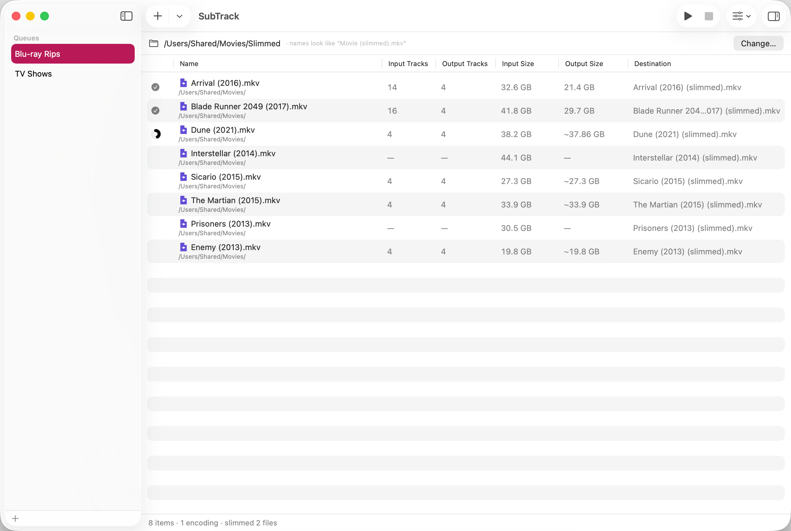

Once the queue shows what each file will keep, you can run all of it or just part of it.

Cancelling stops the work in progress and discards the partial output. Your source files are never modified — SubTrack only ever writes new ones.
If Start is dimmed, two files in the queue would write to the same place, or one would overwrite its own source. SubTrack won’t start until that’s resolved, because either would destroy a file. See Name the files SubTrack writes.
Each running row shows its own progress, and the bar beneath the queue shows how many items there are, how many are done, and how many are encoding right now. The Dock icon carries the overall progress too, so you can start a batch and switch away.
Files that are only being copied finish almost immediately. A file that needs one track converted takes as long as that conversion takes — which is why a queue can appear to stall on a single row while the others fly past. That row is doing real work.
The queue lists each file’s track count and size before and after, so you can see what a run actually bought you. Output size only becomes real once a file finishes; until then there is nothing on disk to measure.
The status column carries a symbol per row. Point at one to read what it means: